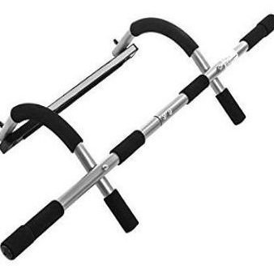

Dominadas sin barra: 3 alternativas que FUNCIONAN – Snap Fitness Spain
Snap Fitness Australia België Canada España 香港 Hong Kong Indonesia Ireland 日本 México Nederland New Zealand Philippines 台灣 Taiwan Türkiye UAE UK USA Nuestro método Ubicaciones & Inscripción Trabaja con nosotros Abre tu franquicia Blog Nuestro método Ubicaciones & Inscripción Trabaja con nosotros Abre tu franquicia Blog Australia België Canada España 香港 Hong Kong Indonesia Ireland 日本 México Nederland New Zealand Philippines 台灣 Taiwan Türkiye UAE UK USA
Nuestras respuestas ante el COVID-19 Más información
Aptitud
Blog
New
Aptitud
Estilo de vida
Nutrición
Entrenamientos
Bienestar mental
Historias de éxito
Podcast
Dominadas sin barra: 3 alternativas que FUNCIONAN
Aptitud
2018-01-29 | By: Snap FitnessLas dominadas son esas flexiones de brazos que se hacen en suspensión, normalmente colgando de una barra fija en el techo.
Se trata de un ejercicio potente para ejercitar la espalda y los bíceps que en los gimnasios 24 horas de Snap Fitness incluimos en actividades dirigidas como el crossfit.
Durante tus entrenos puedes encontrarte con que esas barras están ocupadas. Si no quieres turnarte o esperar a que la otra persona acabe, existen varias alternativas que deberías tener en cuenta.
Incluso puedes hacer dominadas sin barra en casa cuando no tengas tiempo de ir al gimnasio. Al fin y al cabo, todo es usar la imaginación para trabajar tus músculos.
Limpia el suelo mientras haces dominadas sin barra
Eso de limpiar el suelo es broma, porque más te vale realizar el ejercicio en una superficie que esté limpia y deslizante desde antes.
Lo primero que debes hacer es estirarte boca abajo con las piernas rectas y los brazos abiertos hacia arriba (como en la posición inicial de unas dominadas con barra).
Fija las manos en el suelo, deslízate hacia arriba hasta que las manos te queden a la altura del cuello y vuelve a la posición inicial.
Puedes hacerlo más fácil usando unos sliders en tus pies o más difícil haciendo las dominadas con un solo brazo o con una mochila.
Rema con una barandilla
Si eso de hacerlo en el suelo no te convence, levántate y busca una barandilla o pasamanos.
Agárrala con las dos manos y deslízate debajo de la barra, con los brazos separados a lo ancho de los hombros.
Extiende las piernas hacia enfrente para que el peso de tu cuerpo se sostenga en tus talones. Impúlsate hacia la barra hasta que la toques con el pecho y haz tus series.
El movimiento cambia un poco pero trabajas los mismos músculos de la espalda.
Usa una puerta para tus dominadas
No sería la mejor alternativa para las dominadas sin barra, a no ser que tengas una puerta con bisagras fuertes y un marco con molduras.
Ten en cuenta que la puerta tiene que soportar tu peso y no están hechas para esto. Si decides probarlo, “que la puerta te acompañe”.
Puedes hacer las dominadas de dos formas distintas . Una es colgándote del marco de la puerta con las dos manos y otra es usar una toalla.
En el primer caso debes tener la puerta abierta e ir con cuidado de que no se cierre ni te des con la parte de arriba del marco con la cabeza.
En el segundo caso deberás cerrar la puerta con una toalla que sobresalga por encima por los dos extremos, que será donde te agarrarás para hacer las dominadas.
Así que ya sabes, si vas al gimnasio a una hora muy concurrida o prefieres quedarte en casa, puedes hacer dominadas sin barra perfectamente.
Eso sí, en Snap Fitness te procuramos espacios de sobra para que puedas realizar tu entrenamiento a gusto y a la hora del día que prefieras.
Si todavía no eres socio, te regalamos una sesión de prueba para que veas de primera mano nuestras instalaciones.
Alternativa a las dominadas
Todos los ejercicios son importantes porque trabajan cada parte del cuerpo.
En el caso de las dominadas, realizan un trabajo importante en los músculos de la espalda.
Sin embargo, estás buscando una alternativa a las dominadas , puedes optar por el remo invertido .
Otro de los ejercicios que puedes hacer como alternativa a las dominadas es la polea al pecho.
Este ejercicio es de los más comunes en una rutina de musculatura. Imita los movimientos que realizarías con una dominada pero usas un peso más ligero que el de tu cuerpo.
Necesitaremos una máquina específica para este ejercicio.
Debemos mantener una buena postura, espalda recta y tirar de la polea mientras flexionamos los codos.
La barra debe llegar hasta el pecho, es decir, tirar de la polea hasta nuestro pecho y volver a la posición inicial si dejar caer el peso.
You may also like
EJERCICIOS DE ESPALDA CON MANCUERNAS EN EL GYM Cómo hacer espalda en el gym: Las mejores máquinas Descubre las mejores recetas de ensaladas veganas ¿Cómo montar un gimnasio en España?Don t want to miss anything?
Get the latest recipes, workouts, success stories, tips and more right in your inbox.
SubscribeNo te pierdas nada de Snap Fitness
Obtén consejos y mucho más en tu bandeja de entrada
× ×Thank you for subscribing to the Snap Fitness blog! Be sure to check your email for our latest blogs regarding fitness, health and wellness, and fun recipes every month!
Close Check out our podcastSearch the blog
Miembros Nuestro método Ubicaciones Blog Resources Contáctanos Blog Trabaja con nosotros Contáctanos Notas de prensa Change Location Australia België Canada España Germany 香港 Hong Kong Indonesia Ireland 日本 México Nederland New Zealand Philippines 台灣 Taiwan Türkiye UAE UK USA© Lift Brands 2021. All rights reserved | Política de cookies | Mapa del sitio | Política de privacidad | Términos y condiciones